Bibliographie
- 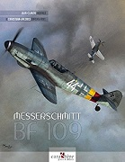 Messerschmitt Bf 109,
Christian Ehrengardt et Jean-Claude Mermet, Editions Caraktère
ISBN 9782916403144
Un must have, malheureusement disponible uniquement en anglais maintenant. (Edit av. 2021) Il vient d'être réédité en version corrigée (ISBN 9782916403069) - 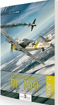 Messerschmitt Bf 109 guide d'identification tome 2,
Jean-Claude Mermet, Editions Caraktère
ISBN 9782916403441
Un must have, tome 2. Toutes les clés pour ne plus se tromper sur les différentes versions de l'avion - 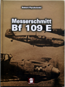 Messerschmitt Bf 109E,
Robert peczkowski, Editions MMP books, anglais.
ISBN 9788365281302
Un livre complet sur le Bf109E, malgré quelques imprécisions. Plans et photos. - 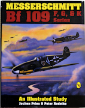 Messerschmitt Bf 109 F,G,K Series,
Jochen Prien et Peter Rodike, Editions Schiffer Military History book, anglais.
ISBN 0887404243
Un autre must have, malheureusement en anglais. Parfait pour completer celui de Mr Mermet. - 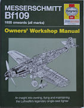Messerschmitt Bf109 Owner's Workshop Manual. Paul Blackah, Malcolm Lowe, édition Haynes Publishing, anglais
ISBN 9780857338600
En anglais, une vue en détail du fonctionnement du BF109, aussi bien du coté pilote que mécanicien. - Messerschmitt Bf109G with DB605A Engine, Robert Peczkowski, éditions MMP, anglais.
ISBN 9788365281685
Une étude détaillée de la version G, avec plans photos noir et blanc et couleurs (avions modernes) - 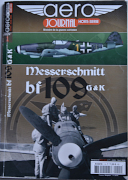Aéro journal HS N°1, JC Mermet, Editions Caraktère, français.
ISSN 21037922
Une étude complète et détaillée sur les versions G et K du Bf109. Photos d'époques et plans, dont certains totalement inédits. - 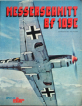Messerschmitt Bf109E, Mister Kit et G. Van Damme, édition Atlas, français.
ISBN inconnu
Un livre assez ancien, qui aborde la version E avec photos et dessins. Destiné principalement aux maquettistes, avec quelques montages en fin de livre. - 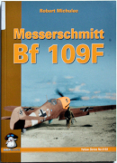Messerschmitt Bf109F, Robert Michulec, éditions MMP Books, anglais.
ISBN 9788361421757
Une monographie synthétique sur le Bf109F dessins, plans, photos en noir et blanc et couleur, avec beaucoup de détails techniques.  Bf109 Aces of North Africa and Mediterranean, Jerry Scutts, éditions Osprey, anglais.
Bf109 Aces of North Africa and Mediterranean, Jerry Scutts, éditions Osprey, anglais.
ISBN 1855324482
Le Bf109 sur le front méditérannéen, avec l'histoire des unités et des pilotes. Photos noir et blanc, profils couleurs.- 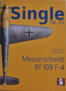Single Bf109F4, Dariusz Karnas et Karolina Holda, édition MMP, anglais.
ISBN 9788365958945
Courte monographie technique, principalement destinée au maquettistes, avec plans, photos noir et plans et couleurs des détails du Bf109F-4. - 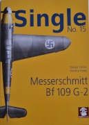Single Bf109F4, Dariusz Karnas et Karolina Holda, édition MMP, anglais.
ISBN 9788365958815
Courte monographie technique, principalement destinée au maquettistes, avec plans, photos noir et plans et couleurs des détails du Bf109G-2. - 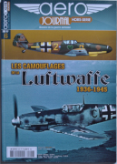Les camouflages de la Luftwaffe 1936-1945, Jean-Claude Mermet, Aéro journal HS6, éditions Caraktère, français.
ISSN 21037922
Une étude complète sur l'historique des camouflages de la Luftwaffe avec schémas, photos couleurs et noir et blanc, profils couleurs. - 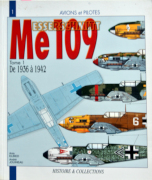Messerschmitt Me 109 Tome 1 de 1936 à 1942, Anis Elbied et André Juineau, Editions Histoire et collection, français.
ISBN 9782913903074
Peu de textes, beaucoup de profils et de schémas sur le 109 de la version A à F2. - 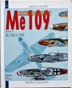Messerschmitt Me 109 Tome 1 de 1942 à 1945, Dominique Breffort et André Juineau, Editions Histoire et collection, français.
ISBN 2913903096
Peu de textes, beaucoup de profils et de schémas sur le 109 de la version F4 au K4 et dérivés du 109.
Liens
- Luftahrt-archiv-hafner.de, Vous trouverez sur ce site les documentations constructeurs.
- Asisbiz, une belle collection de photos d'époque, et bien d'autre.
- Warbirds Resource Group
- Luftarchiv. Un site assez complet en allemand
- Ma galerie Flickr Quelques photos de 109 que j'ai put voir
- L'organisation de la Luftwaffe
- Comparaison entre le DB605AS et le DB605D
- Une explication sur le GM1 et le MW50